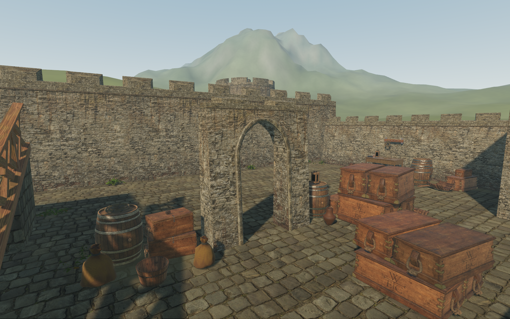
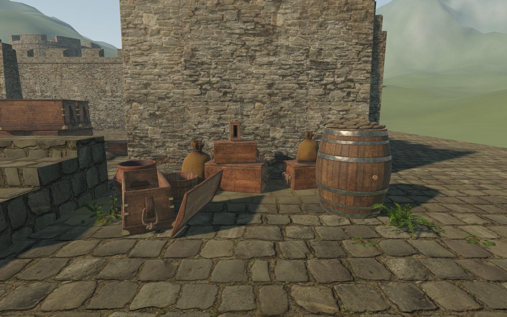
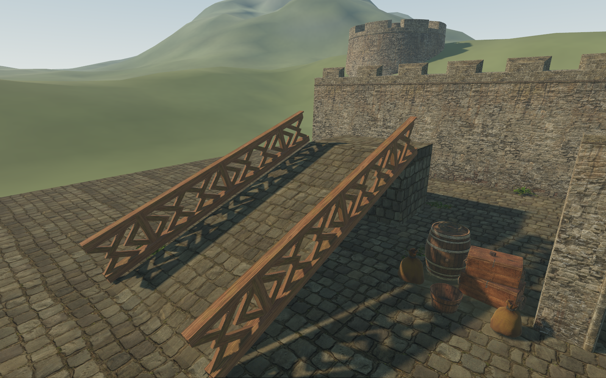

用现有素材重新组织庭院
保留上一轮 Poly Haven 写实实验，另建优化场景。本轮撤掉简化藤蔓和旧草簇，改用 Poly Haven 蕨类、杂草、荨麻；用新长木箱、开箱和破损木桶减少货物重复。建筑与照明沿用上一轮。下面均为 Godot 4.7.2 Metal Forward+ 实机截图，前后使用相同相机位置与 FOV。

可点击版本按钮来回比较。照明、构件与布景同时调整，这里展示的是整体效果变化，不是严格的材质控制变量测试。原版场景和原始下载素材保持不变。
构件比例
长墙改用较短墙段重复拼接，减少立面横向拉伸。门楼顶部局部压低，保留源模型的拱门主体。墙厚仍按测试场适配；没有宣称所有构件均等比缩放。
使用痕迹
工作台增加工具、绳索、杯子、账本与挂架；门边组合袋装货物、陶罐和木桶。三个跳台从 42 个小箱子改成 10 个长木箱，上层交错旋转；跳跃高度与中心落点不变，边缘视觉悬挑与简化碰撞不完全重合。墙边补入开箱、侧放箱盖和破损桶板。
植物与地面
撤掉简化藤蔓、草簇和远景树，改用三类 PBR 植物集中在墙脚与货物边缘。源 glTF 的 JPEG 颜色图不含透明度，另行接入官方 Alpha 遮罩，保留法线与粗糙度。六处透明土痕补充接地变化。
光照与层次
调整太阳方向、暖光与偏冷环境补光，降低部分表面亮度和法线强度。保留现有背景地形，塔楼继续作为外围轮廓。坡道增加顺坡拼接的木栏。

运行与检查
- 在 Godot 的 FileSystem 双击
res://envart/realism_refined/trial.tscn。 - 按 F6 运行当前场景。F5 仍打开原有三方向对比入口。
- 5 / 6 / 7 查看门洞、坡道、墙边道具；3 自由观察。点击画面捕获鼠标后，WASD 移动、E/Q 升降。
- 1 / 2 切玩家视角；4 轨迹相机、P 播放暂停。0 白盒对照，B 开关背景，H 隐藏提示。
- 上一轮仍在
res://envart/realism_trial/trial.tscn，可以单独 F6 运行。

素材与复现
主要建筑、木箱、木桶、工作台来自已有 Poly Haven 批次；补充道具与植物来自项目已有 Quaternius 包。许可与来源见 上一轮素材说明、晴日样板说明及各素材目录的 manifest。新增来源：Fern 02、Weed Plant 02、Nettle Plant、Wooden Crate 02、Wooden Barrels 01。均纳入 Poly Haven 素材清单。局部修改保存在生成场景和着色器内，未覆盖下载源文件。
构建脚本：envart/tools/build_realism_refined.gd；巡检：tests/direction_sample_visual.gd -- refined。装配记录：envart/realism_refined/assembly_notes.json。154 处近景素材放置、3 处背景素材放置，另有 6 个土痕覆盖面与复用的地形网格。重新运行构建脚本会覆盖生成场景，手工编辑前请另存。
验证与仍待判断的部分
已通过 17 个原有碰撞体对照、门洞双向通行、坡道抵达平台、四种相机以及白盒/背景切换检查；保存 11 张实机巡检图。控制器与角色未改变。
这仍是供你判断的美术迭代：整体仍有早期 3D 游戏观感。建筑轮廓、重复石墙、简单远景和部分旧道具尚未解决，不能因此宣称已达到写实，也不把它改称 retro 风格作为验收；尚未进行正式性能预算、目标平台优化或全场美术验收。
上一轮写实实验 · 三方向对比 · Godot 相机教程